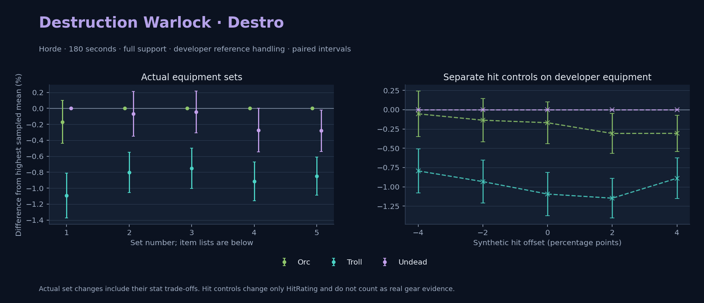

Horde · Orc / Troll / Undead

Pets / guardians: Imp, Voidwalker, Succubus, Felhunter · 57.9 DPS (8.6% of total). Reference: Orc, developer equipment, 180 seconds and full support. Pet choices remain those of the developer build.
WoWSims developer · Pre-raid (baseline fallback)
Unimplemented item effects: [{"id": 14153, "name": "Robe of the Void", "effects": ["Heal your pet for 600."]}]
Unimplemented enchant or active set effects: [{"id": 183, "pieces": 4, "effects": ["When struck in combat has a 2% chance of causing the attacker to flee in terror for 2s. Can only occur once every 60 sec."]}]
180 seconds, full support and original developer references. Hit below is generic sheet melee / spell hit; school and talent bonuses can be attached directly to spells.
| Race | DPS | Gap and interval | Generic hit | Replay |
|---|---|---|---|---|
| Undead | 670.43 | +0.000% ± 0.000 | 7.0% / 7.0% | Native input · Website JSON |
| Orc | 669.30 | -0.170% ± 0.270 | 7.0% / 7.0% | Native input · Website JSON |
| Troll | 663.10 | -1.093% ± 0.279 | 7.0% / 7.0% | Native input · Website JSON |
| Slot | Item | ID | Enchant |
|---|---|---|---|
| Head | Dreadmist Mask | 16698 | |
| Neck | Beads of Ogre Mojo | 22149 | |
| Shoulder | Dreadmist Mantle | 16701 | |
| Back | Arcanoweave Cloak | 272411 | |
| Chest | Robe of the Void | 14153 | |
| Wrist | Dreadmist Bracers | 16703 | |
| Hands | Dreadmist Wraps | 16705 | |
| Waist | Dreadmist Belt | 16702 | |
| Legs | Dreadmist Leggings | 16699 | |
| Feet | Dreadmist Sandals | 16704 | |
| Ring 1 | Jereman's Bauble | 275738 | |
| Ring 2 | Advisor's Ring | 19518 | |
| Trinket 1 | Weakness Analyzer | 272438 | |
| Trinket 2 | Jewel of the Guard Captain | 270225 | |
| Main hand | Darkspear Insurgent's Spellblade | 272083 | |
| Off hand | Truesilver Conduit | 249455 | |
| Ranged / relic | Lunar Wand | 15283 |
Published ranked alternatives · Published pre-raid
Recorded source replacements: [{"slot": "chest", "from": 17775, "to": 1716, "publishedAlternativeRank": 1, "publishedEpDelta": -1.1, "reason": "First published alternative compatible with the current WoWSims database, class, faction and occupied slots."}, {"slot": "feet", "from": 11822, "to": 275606, "publishedAlternativeRank": 1, "publishedEpDelta": -0.9, "reason": "First published alternative compatible with the current WoWSims database, class, faction and occupied slots."}]
180 seconds, full support and original developer references. Hit below is generic sheet melee / spell hit; school and talent bonuses can be attached directly to spells.
| Race | DPS | Gap and interval | Generic hit | Replay |
|---|---|---|---|---|
| Orc | 763.42 | +0.000% ± 0.000 | 8.7% / 8.7% | Native input · Website JSON |
| Undead | 762.90 | -0.068% ± 0.280 | 8.7% / 8.7% | Native input · Website JSON |
| Troll | 757.30 | -0.803% ± 0.252 | 8.7% / 8.7% | Native input · Website JSON |
| Slot | Item | ID | Enchant |
|---|---|---|---|
| Head | Dreadmist Mask | 16698 | Arcanum of Focus |
| Neck | Archlight Talisman | 15856 | Enchant Necklace - Spell Power |
| Shoulder | Mantle of the Timbermaw | 19050 | |
| Back | Arcanoweave Cloak | 272411 | |
| Chest | Robe of the Magi | 1716 | Mystic Rugged Armor Kit |
| Wrist | Dreadmist Bracers | 16703 | Enchant Bracer - Greater Spellpower |
| Hands | Gloves of Spell Mastery | 14146 | Enchant Gloves - Minor Haste |
| Waist | Belt of the Archmage | 18405 | |
| Legs | Dreadmist Leggings | 16699 | Arcanum of Focus |
| Feet | Venomspew Footpads | 275606 | Mystic Rugged Armor Kit |
| Ring 1 | Blessed Band of Light | 272407 | |
| Ring 2 | Maiden's Circle | 13001 | |
| Trinket 1 | Weakness Analyzer | 272438 | |
| Trinket 2 | Rune of the Guard Captain | 19120 | |
| Main hand | Sageblade | 22383 | |
| Off hand | Spirit of Aquementas | 11904 | Enchant Off-Hand - Superior Intellect |
| Ranged / relic | Greater Eternal Wand | 249237 |
Published one-slot hit alternative · Published pre-raid
One source-listed alternative; at least 80% of the source slot score retained. Reported hit selects the contrast; only native stats determine simulation outcomes. This is an experimental combination, not an endorsed best set.
Recorded source replacements: [{"slot": "chest", "from": 17775, "to": 1716, "publishedAlternativeRank": 1, "publishedEpDelta": -1.1, "reason": "First published alternative compatible with the current WoWSims database, class, faction and occupied slots."}, {"slot": "feet", "from": 11822, "to": 275606, "publishedAlternativeRank": 1, "publishedEpDelta": -0.9, "reason": "First published alternative compatible with the current WoWSims database, class, faction and occupied slots."}]
180 seconds, full support and original developer references. Hit below is generic sheet melee / spell hit; school and talent bonuses can be attached directly to spells.
| Race | DPS | Gap and interval | Generic hit | Replay |
|---|---|---|---|---|
| Orc | 759.81 | +0.000% ± 0.000 | 9.7% / 9.7% | Native input · Website JSON |
| Undead | 759.46 | -0.046% ± 0.261 | 9.7% / 9.7% | Native input · Website JSON |
| Troll | 754.11 | -0.750% ± 0.253 | 9.7% / 9.7% | Native input · Website JSON |
| Slot | Item | ID | Enchant |
|---|---|---|---|
| Head | Dreadmist Mask | 16698 | Arcanum of Focus |
| Neck | Archlight Talisman | 15856 | Enchant Necklace - Spell Power |
| Shoulder | Mantle of the Timbermaw | 19050 | |
| Back | Arcanoweave Cloak | 272411 | |
| Chest | Robe of the Magi | 1716 | Mystic Rugged Armor Kit |
| Wrist | Dreadmist Bracers | 16703 | Enchant Bracer - Greater Spellpower |
| Hands | Gloves of Spell Mastery | 14146 | Enchant Gloves - Minor Haste |
| Waist | Belt of the Archmage | 18405 | |
| Legs | Dreadmist Leggings | 16699 | Arcanum of Focus |
| Feet | Venomspew Footpads | 275606 | Mystic Rugged Armor Kit |
| Ring 1 | Blessed Band of Light | 272407 | |
| Ring 2 | Channeler's Ring | 272406 | |
| Trinket 1 | Weakness Analyzer | 272438 | |
| Trinket 2 | Rune of the Guard Captain | 19120 | |
| Main hand | Sageblade | 22383 | |
| Off hand | Spirit of Aquementas | 11904 | Enchant Off-Hand - Superior Intellect |
| Ranged / relic | Greater Eternal Wand | 249237 |
Published ranked alternatives · Published pre-raid
Recorded source replacements: [{"slot": "shoulder", "from": 227808, "to": 19050, "publishedAlternativeRank": 1, "publishedEpDelta": -10.7, "reason": "First published alternative compatible with the current WoWSims database, class, faction and occupied slots."}, {"slot": "waist", "from": 228190, "to": 18405, "publishedAlternativeRank": 1, "publishedEpDelta": -9.6, "reason": "First published alternative compatible with the current WoWSims database, class, faction and occupied slots."}, {"slot": "feet", "from": 11822, "to": 275606, "publishedAlternativeRank": 1, "publishedEpDelta": -0.9, "reason": "First published alternative compatible with the current WoWSims database, class, faction and occupied slots."}]
Unimplemented item effects: [{"id": 14153, "name": "Robe of the Void", "effects": ["Heal your pet for 600."]}]
180 seconds, full support and original developer references. Hit below is generic sheet melee / spell hit; school and talent bonuses can be attached directly to spells.
| Race | DPS | Gap and interval | Generic hit | Replay |
|---|---|---|---|---|
| Orc | 782.98 | +0.000% ± 0.000 | 8.9% / 8.9% | Native input · Website JSON |
| Undead | 780.84 | -0.273% ± 0.275 | 8.9% / 8.9% | Native input · Website JSON |
| Troll | 775.81 | -0.915% ± 0.244 | 8.9% / 8.9% | Native input · Website JSON |
| Slot | Item | ID | Enchant |
|---|---|---|---|
| Head | Dreamweave Circlet | 10041 | Arcanum of Focus |
| Neck | Archlight Talisman | 15856 | Enchant Necklace - Spell Power |
| Shoulder | Mantle of the Timbermaw | 19050 | |
| Back | Arcanoweave Cloak | 272411 | |
| Chest | Robe of the Void | 14153 | Mystic Rugged Armor Kit |
| Wrist | Runecloth Cuffs | 254123 | Enchant Bracer - Greater Spellpower |
| Hands | Gloves of Spell Mastery | 14146 | Enchant Gloves - Minor Haste |
| Waist | Belt of the Archmage | 18405 | |
| Legs | Ghostweave Pants | 14144 | Arcanum of Focus |
| Feet | Venomspew Footpads | 275606 | Mystic Rugged Armor Kit |
| Ring 1 | Blessed Band of Light | 272407 | |
| Ring 2 | Maiden's Circle | 13001 | |
| Trinket 1 | Weakness Analyzer | 272438 | |
| Trinket 2 | Frozen Heart of the Mountain | 249469 | |
| Main hand | Sageblade | 22383 | |
| Off hand | Spirit of Aquementas | 11904 | Enchant Off-Hand - Superior Intellect |
| Ranged / relic | Brilliant Wand | 249385 |
Published one-slot hit alternative · Published pre-raid
One source-listed alternative; at least 80% of the source slot score retained. Reported hit selects the contrast; only native stats determine simulation outcomes. This is an experimental combination, not an endorsed best set.
Recorded source replacements: [{"slot": "shoulder", "from": 227808, "to": 19050, "publishedAlternativeRank": 1, "publishedEpDelta": -10.7, "reason": "First published alternative compatible with the current WoWSims database, class, faction and occupied slots."}, {"slot": "waist", "from": 228190, "to": 18405, "publishedAlternativeRank": 1, "publishedEpDelta": -9.6, "reason": "First published alternative compatible with the current WoWSims database, class, faction and occupied slots."}, {"slot": "feet", "from": 11822, "to": 275606, "publishedAlternativeRank": 1, "publishedEpDelta": -0.9, "reason": "First published alternative compatible with the current WoWSims database, class, faction and occupied slots."}]
Unimplemented item effects: [{"id": 14153, "name": "Robe of the Void", "effects": ["Heal your pet for 600."]}]
180 seconds, full support and original developer references. Hit below is generic sheet melee / spell hit; school and talent bonuses can be attached directly to spells.
| Race | DPS | Gap and interval | Generic hit | Replay |
|---|---|---|---|---|
| Orc | 780.69 | +0.000% ± 0.000 | 9.9% / 9.9% | Native input · Website JSON |
| Undead | 778.49 | -0.281% ± 0.260 | 9.9% / 9.9% | Native input · Website JSON |
| Troll | 774.06 | -0.848% ± 0.240 | 9.9% / 9.9% | Native input · Website JSON |
| Slot | Item | ID | Enchant |
|---|---|---|---|
| Head | Dreamweave Circlet | 10041 | Arcanum of Focus |
| Neck | Archlight Talisman | 15856 | Enchant Necklace - Spell Power |
| Shoulder | Mantle of the Timbermaw | 19050 | |
| Back | Arcanoweave Cloak | 272411 | |
| Chest | Robe of the Void | 14153 | Mystic Rugged Armor Kit |
| Wrist | Runecloth Cuffs | 254123 | Enchant Bracer - Greater Spellpower |
| Hands | Gloves of Spell Mastery | 14146 | Enchant Gloves - Minor Haste |
| Waist | Belt of the Archmage | 18405 | |
| Legs | Ghostweave Pants | 14144 | Arcanum of Focus |
| Feet | Venomspew Footpads | 275606 | Mystic Rugged Armor Kit |
| Ring 1 | Blessed Band of Light | 272407 | |
| Ring 2 | Channeler's Ring | 272406 | |
| Trinket 1 | Weakness Analyzer | 272438 | |
| Trinket 2 | Frozen Heart of the Mountain | 249469 | |
| Main hand | Sageblade | 22383 | |
| Off hand | Spirit of Aquementas | 11904 | Enchant Off-Hand - Superior Intellect |
| Ranged / relic | Brilliant Wand | 249385 |
The same declared pool is available to every race. Each race keeps its best validation-sample set with its screening-selected racial policy. Separate samples confirm that choice, with fresh precision samples near the practical-loss boundary. Gaps use the highest sampled mean under that same duration, support and reference treatment as their reference. A zero reference gap does not certify a race; the main matrix also allows uncertainty in the leader.
| Pool | Seconds | Support | References | Race | DPS | Gap and interval | Racial policies / mana | Selected set | Generic hit: melee / spell | Replay |
|---|---|---|---|---|---|---|---|---|---|---|
| published-pre-raid | 60 | full | developer | Troll | 835.83 | +0.000% ± 0.0005,000 iterations | developer / developer / developerMana waits 0.2s | published-warlock-destruction-horde-acd15b607e0a14e6 | 8.9% / 8.9% | Input · Result · Stats |
| published-pre-raid | 60 | full | developer | Orc | 830.50 | -0.638% ± 0.1315,000 iterations | developer / developer / developerMana waits 0.1s | published-warlock-destruction-horde-acd15b607e0a14e6 | 8.9% / 8.9% | Input · Result · Stats |
| published-pre-raid | 60 | full | developer | Undead | 825.37 | -1.252% ± 0.1565,000 iterations | developer / developer / developerMana waits 0.1s | published-warlock-destruction-horde-acd15b607e0a14e6 | 8.9% / 8.9% | Input · Result · Stats |
| published-pre-raid | 60 | full | explicit | Troll | 835.83 | +0.000% ± 0.0005,000 iterations | developer / developer / developerMana waits 0.2s | published-warlock-destruction-horde-acd15b607e0a14e6 | 8.9% / 8.9% | Input · Result · Stats |
| published-pre-raid | 60 | full | explicit | Orc | 830.50 | -0.638% ± 0.1315,000 iterations | developer / developer / developerMana waits 0.1s | published-warlock-destruction-horde-acd15b607e0a14e6 | 8.9% / 8.9% | Input · Result · Stats |
| published-pre-raid | 60 | full | explicit | Undead | 825.37 | -1.252% ± 0.1565,000 iterations | developer / developer / developerMana waits 0.1s | published-warlock-destruction-horde-acd15b607e0a14e6 | 8.9% / 8.9% | Input · Result · Stats |
| published-pre-raid | 60 | self | developer | Troll | 741.80 | +0.000% ± 0.00020,000 iterations | developer / developer / developerMana waits 2.6s | published-warlock-destruction-horde-acd15b607e0a14e6 | 8.9% / 8.9% | Input · Result · Stats |
| published-pre-raid | 60 | self | developer | Orc | 735.22 | -0.886% ± 0.07120,000 iterations | developer / developer / developerMana waits 2.5s | published-warlock-destruction-horde-acd15b607e0a14e6 | 8.9% / 8.9% | Input · Result · Stats |
| published-pre-raid | 60 | self | developer | Undead | 729.23 | -1.695% ± 0.08520,000 iterations | developer / developer / developerMana waits 2.4s | published-warlock-destruction-horde-acd15b607e0a14e6 | 8.9% / 8.9% | Input · Result · Stats |
| published-pre-raid | 60 | self | explicit | Troll | 741.80 | +0.000% ± 0.00020,000 iterations | developer / developer / developerMana waits 2.6s | published-warlock-destruction-horde-acd15b607e0a14e6 | 8.9% / 8.9% | Input · Result · Stats |
| published-pre-raid | 60 | self | explicit | Orc | 735.22 | -0.886% ± 0.07120,000 iterations | developer / developer / developerMana waits 2.5s | published-warlock-destruction-horde-acd15b607e0a14e6 | 8.9% / 8.9% | Input · Result · Stats |
| published-pre-raid | 60 | self | explicit | Undead | 729.23 | -1.695% ± 0.08520,000 iterations | developer / developer / developerMana waits 2.4s | published-warlock-destruction-horde-acd15b607e0a14e6 | 8.9% / 8.9% | Input · Result · Stats |
| published-pre-raid | 180 | full | developer | Orc | 782.13 | +0.000% ± 0.00020,000 iterations | developer / developer / developerMana waits 2.5s | published-warlock-destruction-horde-acd15b607e0a14e6 | 8.9% / 8.9% | Input · Result · Stats · Website JSON |
| published-pre-raid | 180 | full | developer | Undead | 779.90 | -0.285% ± 0.06020,000 iterations | developer / developer / developerMana waits 2.5s | published-warlock-destruction-horde-acd15b607e0a14e6 | 8.9% / 8.9% | Input · Result · Stats · Website JSON |
| published-pre-raid | 180 | full | developer | Troll | 775.94 | -0.791% ± 0.05720,000 iterations | developer / developer / developerMana waits 2.6s | published-warlock-destruction-horde-acd15b607e0a14e6 | 8.9% / 8.9% | Input · Result · Stats · Website JSON |
| published-pre-raid | 180 | full | explicit | Orc | 782.13 | +0.000% ± 0.00020,000 iterations | developer / developer / developerMana waits 2.5s | published-warlock-destruction-horde-acd15b607e0a14e6 | 8.9% / 8.9% | Input · Result · Stats |
| published-pre-raid | 180 | full | explicit | Undead | 779.90 | -0.285% ± 0.06020,000 iterations | developer / developer / developerMana waits 2.5s | published-warlock-destruction-horde-acd15b607e0a14e6 | 8.9% / 8.9% | Input · Result · Stats |
| published-pre-raid | 180 | full | explicit | Troll | 775.94 | -0.791% ± 0.05720,000 iterations | developer / developer / developerMana waits 2.6s | published-warlock-destruction-horde-acd15b607e0a14e6 | 8.9% / 8.9% | Input · Result · Stats |
| published-pre-raid | 180 | self | developer | Orc | 698.90 | +0.000% ± 0.00020,000 iterations | developer / developer / developerMana waits 4.5s | published-warlock-destruction-horde-acd15b607e0a14e6 | 8.9% / 8.9% | Input · Result · Stats |
| published-pre-raid | 180 | self | developer | Undead | 695.53 | -0.481% ± 0.06020,000 iterations | developer / developer / developerMana waits 4.5s | published-warlock-destruction-horde-acd15b607e0a14e6 | 8.9% / 8.9% | Input · Result · Stats |
| published-pre-raid | 180 | self | developer | Troll | 692.98 | -0.847% ± 0.05420,000 iterations | developer / developer / developerMana waits 4.8s | published-warlock-destruction-horde-acd15b607e0a14e6 | 8.9% / 8.9% | Input · Result · Stats |
| published-pre-raid | 180 | self | explicit | Orc | 698.90 | +0.000% ± 0.00020,000 iterations | developer / developer / developerMana waits 4.5s | published-warlock-destruction-horde-acd15b607e0a14e6 | 8.9% / 8.9% | Input · Result · Stats |
| published-pre-raid | 180 | self | explicit | Undead | 695.53 | -0.481% ± 0.06020,000 iterations | developer / developer / developerMana waits 4.5s | published-warlock-destruction-horde-acd15b607e0a14e6 | 8.9% / 8.9% | Input · Result · Stats |
| published-pre-raid | 180 | self | explicit | Troll | 692.98 | -0.847% ± 0.05420,000 iterations | developer / developer / developerMana waits 4.8s | published-warlock-destruction-horde-acd15b607e0a14e6 | 8.9% / 8.9% | Input · Result · Stats |
| published-pre-raid | 300 | full | developer | Orc | 780.38 | +0.000% ± 0.00020,000 iterations | developer / developer / developerMana waits 2.2s | published-warlock-destruction-horde-acd15b607e0a14e6 | 8.9% / 8.9% | Input · Result · Stats |
| published-pre-raid | 300 | full | developer | Undead | 778.39 | -0.255% ± 0.05120,000 iterations | developer / developer / developerMana waits 2.2s | published-warlock-destruction-horde-acd15b607e0a14e6 | 8.9% / 8.9% | Input · Result · Stats |
| published-pre-raid | 300 | full | developer | Troll | 775.68 | -0.602% ± 0.04920,000 iterations | developer / developer / developerMana waits 2.2s | published-warlock-destruction-horde-acd15b607e0a14e6 | 8.9% / 8.9% | Input · Result · Stats |
| published-pre-raid | 300 | full | explicit | Orc | 780.38 | +0.000% ± 0.00020,000 iterations | developer / developer / developerMana waits 2.2s | published-warlock-destruction-horde-acd15b607e0a14e6 | 8.9% / 8.9% | Input · Result · Stats |
| published-pre-raid | 300 | full | explicit | Undead | 778.39 | -0.255% ± 0.05120,000 iterations | developer / developer / developerMana waits 2.2s | published-warlock-destruction-horde-acd15b607e0a14e6 | 8.9% / 8.9% | Input · Result · Stats |
| published-pre-raid | 300 | full | explicit | Troll | 775.68 | -0.602% ± 0.04920,000 iterations | developer / developer / developerMana waits 2.2s | published-warlock-destruction-horde-acd15b607e0a14e6 | 8.9% / 8.9% | Input · Result · Stats |
| published-pre-raid | 300 | self | developer | Orc | 697.10 | +0.000% ± 0.0005,000 iterations | developer / developer / developerMana waits 5.1s | published-warlock-destruction-horde-acd15b607e0a14e6 | 8.9% / 8.9% | Input · Result · Stats |
| published-pre-raid | 300 | self | developer | Undead | 694.21 | -0.416% ± 0.1025,000 iterations | developer / developer / developerMana waits 5.1s | published-warlock-destruction-horde-acd15b607e0a14e6 | 8.9% / 8.9% | Input · Result · Stats |
| published-pre-raid | 300 | self | developer | Troll | 691.87 | -0.751% ± 0.0975,000 iterations | developer / developer / developerMana waits 5.1s | published-warlock-destruction-horde-acd15b607e0a14e6 | 8.9% / 8.9% | Input · Result · Stats |
| published-pre-raid | 300 | self | explicit | Orc | 697.10 | +0.000% ± 0.0005,000 iterations | developer / developer / developerMana waits 5.1s | published-warlock-destruction-horde-acd15b607e0a14e6 | 8.9% / 8.9% | Input · Result · Stats |
| published-pre-raid | 300 | self | explicit | Undead | 694.21 | -0.416% ± 0.1025,000 iterations | developer / developer / developerMana waits 5.1s | published-warlock-destruction-horde-acd15b607e0a14e6 | 8.9% / 8.9% | Input · Result · Stats |
| published-pre-raid | 300 | self | explicit | Troll | 691.87 | -0.751% ± 0.0975,000 iterations | developer / developer / developerMana waits 5.1s | published-warlock-destruction-horde-acd15b607e0a14e6 | 8.9% / 8.9% | Input · Result · Stats |
| developer-reference | 60 | full | developer | Troll | 706.58 | +0.000% ± 0.0005,000 iterations | developer / developer / developerMana waits 0.0s | developer | 7.0% / 7.0% | Input · Result · Stats |
| developer-reference | 60 | full | developer | Undead | 699.27 | -1.034% ± 0.1685,000 iterations | developer / developer / developerMana waits 0.0s | developer | 7.0% / 7.0% | Input · Result · Stats |
| developer-reference | 60 | full | developer | Orc | 698.53 | -1.139% ± 0.1575,000 iterations | developer / developer / developerMana waits 0.0s | developer | 7.0% / 7.0% | Input · Result · Stats |
| developer-reference | 60 | full | explicit | Troll | 706.58 | +0.000% ± 0.0005,000 iterations | developer / developer / developerMana waits 0.0s | developer | 7.0% / 7.0% | Input · Result · Stats |
| developer-reference | 60 | full | explicit | Undead | 699.27 | -1.034% ± 0.1685,000 iterations | developer / developer / developerMana waits 0.0s | developer | 7.0% / 7.0% | Input · Result · Stats |
| developer-reference | 60 | full | explicit | Orc | 698.53 | -1.139% ± 0.1575,000 iterations | developer / developer / developerMana waits 0.0s | developer | 7.0% / 7.0% | Input · Result · Stats |
| developer-reference | 60 | self | developer | Troll | 632.57 | +0.000% ± 0.00020,000 iterations | developer / developer / developerMana waits 1.8s | developer | 7.0% / 7.0% | Input · Result · Stats |
| developer-reference | 60 | self | developer | Orc | 630.42 | -0.339% ± 0.07920,000 iterations | developer / developer / developerMana waits 1.4s | developer | 7.0% / 7.0% | Input · Result · Stats |
| developer-reference | 60 | self | developer | Undead | 629.43 | -0.495% ± 0.08520,000 iterations | developer / developer / developerMana waits 1.4s | developer | 7.0% / 7.0% | Input · Result · Stats |
| developer-reference | 60 | self | explicit | Troll | 632.57 | +0.000% ± 0.00020,000 iterations | developer / developer / developerMana waits 1.8s | developer | 7.0% / 7.0% | Input · Result · Stats |
| developer-reference | 60 | self | explicit | Orc | 630.42 | -0.339% ± 0.07920,000 iterations | developer / developer / developerMana waits 1.4s | developer | 7.0% / 7.0% | Input · Result · Stats |
| developer-reference | 60 | self | explicit | Undead | 629.43 | -0.495% ± 0.08520,000 iterations | developer / developer / developerMana waits 1.4s | developer | 7.0% / 7.0% | Input · Result · Stats |
| developer-reference | 180 | full | developer | Undead | 669.41 | +0.000% ± 0.00020,000 iterations | developer / developer / developerMana waits 2.3s | developer | 7.0% / 7.0% | Input · Result · Stats · Website JSON |
| developer-reference | 180 | full | developer | Orc | 667.32 | -0.312% ± 0.06020,000 iterations | developer / developer / developerMana waits 2.3s | developer | 7.0% / 7.0% | Input · Result · Stats · Website JSON |
| developer-reference | 180 | full | developer | Troll | 662.18 | -1.080% ± 0.06120,000 iterations | developer / developer / developerMana waits 2.1s | developer | 7.0% / 7.0% | Input · Result · Stats · Website JSON |
| developer-reference | 180 | full | explicit | Undead | 669.41 | +0.000% ± 0.00020,000 iterations | developer / developer / developerMana waits 2.3s | developer | 7.0% / 7.0% | Input · Result · Stats |
| developer-reference | 180 | full | explicit | Orc | 667.32 | -0.312% ± 0.06020,000 iterations | developer / developer / developerMana waits 2.3s | developer | 7.0% / 7.0% | Input · Result · Stats |
| developer-reference | 180 | full | explicit | Troll | 662.18 | -1.080% ± 0.06120,000 iterations | developer / developer / developerMana waits 2.1s | developer | 7.0% / 7.0% | Input · Result · Stats |
| developer-reference | 180 | self | developer | Undead | 595.61 | +0.000% ± 0.00020,000 iterations | developer / developer / developerMana waits 4.6s | developer | 7.0% / 7.0% | Input · Result · Stats |
| developer-reference | 180 | self | developer | Orc | 595.08 | -0.090% ± 0.06020,000 iterations | developer / developer / developerMana waits 4.6s | developer | 7.0% / 7.0% | Input · Result · Stats |
| developer-reference | 180 | self | developer | Troll | 590.73 | -0.820% ± 0.06220,000 iterations | developer / developer / developerMana waits 4.6s | developer | 7.0% / 7.0% | Input · Result · Stats |
| developer-reference | 180 | self | explicit | Undead | 595.61 | +0.000% ± 0.00020,000 iterations | developer / developer / developerMana waits 4.6s | developer | 7.0% / 7.0% | Input · Result · Stats |
| developer-reference | 180 | self | explicit | Orc | 595.08 | -0.090% ± 0.06020,000 iterations | developer / developer / developerMana waits 4.6s | developer | 7.0% / 7.0% | Input · Result · Stats |
| developer-reference | 180 | self | explicit | Troll | 590.73 | -0.820% ± 0.06220,000 iterations | developer / developer / developerMana waits 4.6s | developer | 7.0% / 7.0% | Input · Result · Stats |
| developer-reference | 300 | full | developer | Undead | 667.49 | +0.000% ± 0.00020,000 iterations | developer / developer / developerMana waits 1.9s | developer | 7.0% / 7.0% | Input · Result · Stats |
| developer-reference | 300 | full | developer | Orc | 665.33 | -0.323% ± 0.05120,000 iterations | developer / developer / developerMana waits 1.9s | developer | 7.0% / 7.0% | Input · Result · Stats |
| developer-reference | 300 | full | developer | Troll | 661.56 | -0.888% ± 0.05220,000 iterations | oncd / developer / developerMana waits 1.9s | developer | 7.0% / 7.0% | Input · Result · Stats |
| developer-reference | 300 | full | explicit | Undead | 667.49 | +0.000% ± 0.00020,000 iterations | developer / developer / developerMana waits 1.9s | developer | 7.0% / 7.0% | Input · Result · Stats |
| developer-reference | 300 | full | explicit | Orc | 665.33 | -0.323% ± 0.05120,000 iterations | developer / developer / developerMana waits 1.9s | developer | 7.0% / 7.0% | Input · Result · Stats |
| developer-reference | 300 | full | explicit | Troll | 661.56 | -0.888% ± 0.05220,000 iterations | oncd / developer / developerMana waits 1.9s | developer | 7.0% / 7.0% | Input · Result · Stats |
| developer-reference | 300 | self | developer | Undead | 594.57 | +0.000% ± 0.0005,000 iterations | developer / developer / developerMana waits 4.5s | developer | 7.0% / 7.0% | Input · Result · Stats |
| developer-reference | 300 | self | developer | Orc | 594.05 | -0.087% ± 0.1015,000 iterations | developer / developer / developerMana waits 4.5s | developer | 7.0% / 7.0% | Input · Result · Stats |
| developer-reference | 300 | self | developer | Troll | 590.61 | -0.665% ± 0.1035,000 iterations | developer / developer / developerMana waits 4.5s | developer | 7.0% / 7.0% | Input · Result · Stats |
| developer-reference | 300 | self | explicit | Undead | 594.57 | +0.000% ± 0.0005,000 iterations | developer / developer / developerMana waits 4.5s | developer | 7.0% / 7.0% | Input · Result · Stats |
| developer-reference | 300 | self | explicit | Orc | 594.05 | -0.087% ± 0.1015,000 iterations | developer / developer / developerMana waits 4.5s | developer | 7.0% / 7.0% | Input · Result · Stats |
| developer-reference | 300 | self | explicit | Troll | 590.61 | -0.665% ± 0.1035,000 iterations | developer / developer / developerMana waits 4.5s | developer | 7.0% / 7.0% | Input · Result · Stats |
180 seconds, full support and the developer equipment anchor. These checks test creature sensitivity without a full gear search.
| Target | References | Race | DPS | Gap and interval | Replay |
|---|---|---|---|---|---|
| beast | developer | Troll | 693.50 | +0.000% ± 0.000 | Input · Result |
| beast | developer | Undead | 670.43 | -3.326% ± 0.274 | Input · Result |
| beast | developer | Orc | 669.30 | -3.490% ± 0.250 | Input · Result |
| beast | explicit | Troll | 693.50 | +0.000% ± 0.000 | Input · Result |
| beast | explicit | Undead | 670.43 | -3.326% ± 0.274 | Input · Result |
| beast | explicit | Orc | 669.30 | -3.490% ± 0.250 | Input · Result |
| elemental | developer | Undead | 670.43 | +0.000% ± 0.000 | Input · Result |
| elemental | developer | Orc | 669.30 | -0.170% ± 0.270 | Input · Result |
| elemental | developer | Troll | 663.10 | -1.093% ± 0.279 | Input · Result |
| elemental | explicit | Undead | 670.43 | +0.000% ± 0.000 | Input · Result |
| elemental | explicit | Orc | 669.30 | -0.170% ± 0.270 | Input · Result |
| elemental | explicit | Troll | 663.10 | -1.093% ± 0.279 | Input · Result |
Some equipment has unimplemented item effects; Some equipment has unimplemented enchant or set effects
These known-issue notes are source context. Runtime checks establish current cast coverage, including Mutilate. They do not prove every mechanic matches the game.